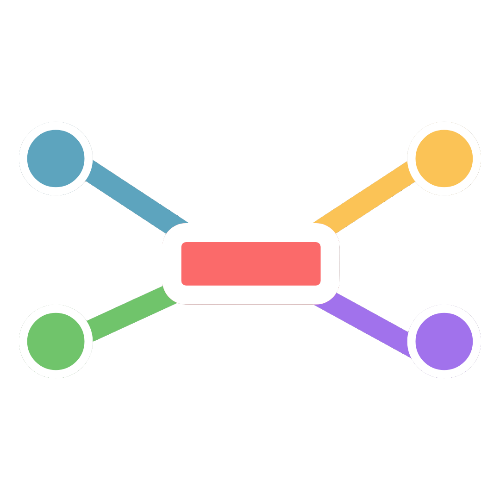

NFDesigner
by NetFormosa
v0.0.3.1 dev
存取驗證
此為開發版本，請輸入存取代碼以繼續使用。
存取代碼不正確，請再試一次
驗證存取代碼
已完成驗證
正在載入 NFDesigner…
NFDesigner
by NetFormosa
檔案
編輯
檢視
圖層
匯出
管理
說明
未命名專案
儲存
匯出
NFDesigner
未命名專案
選取
車站
路線
文字
畫布
屬性
圖層
管理
更多
NFDesigner
by NetFormosa
目前專案
未命名專案
新增專案
開啟專案 (.metro)
另存新檔
GitHub
主題色彩
深色
淺色
Dracula
Nord
Solarized
Monokai
圖層
文字標籤
圖示標記
車站
捷運路線
屬性
請在畫布上選擇物件以編輯屬性
更多操作
編輯
復原
重做
複製
貼上
刪除
視圖
切換格線
對齊網格
符合視窗
-
+
100%
匯出
PNG
SVG
PDF
WebP
JSON
新增專案
開啟專案 (.metro)
另存新檔
復原
Ctrl+Z
重做
Ctrl+⇧+Z
複製
Ctrl+C
貼上
Ctrl+V
刪除
Del
全選
Ctrl+A
群組
Ctrl+G
對齊格線
✓
放大
+
縮小
-
符合視窗
Ctrl+0
100%
Ctrl+1
顯示格線
✓
主題
深色 (預設)
✓
淺色
✓
Dracula
✓
Nord
✓
Solarized Dark
✓
Monokai
✓
匯出為 SVG
匯出為 PNG
匯出為 WebP
匯出為 PDF
匯出為 JSON
顯示右側面板
關於 NFDesigner
管理車站
管理路線
開啟管理視窗
匯出設定
✕
匯出範圍
畫布全區
僅內容區域
僅選取物件
格式
SVG
PNG
WebP
PDF
JSON (.metro)
解析度
1× (原始)
2× (推薦)
4× (高解析)
品質
92
透明背景
關於
✕
NFDesigner
by NetFormosa
專業的捷運路線圖視覺化設計工具。
支援高自由度的路線繪製、車站編輯、雙語標籤，並可套用自訂樣式與多格式匯出 (SVG / PNG / WebP / PDF)。
複製
貼上
移至最前
移至最後
群組
鎖定
刪除
NFDesigner
未命名專案
選取
車站
路線
文字
平移
放大
縮小
符合